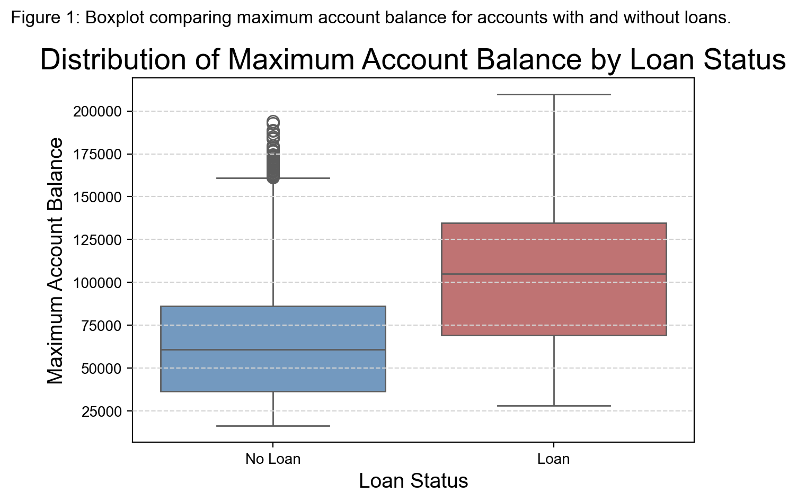

import pandas as pd
import numpy as np
import re
from pyhere import here
# Load loans.csv dataset
loans = pd.read_csv(here("data", "loans.csv"))
# Identify all column names in the format "24_A", "12_B"
loan_term_cols = [col for col in loans.columns if re.match(r"^\d+_[ABCD]$", col)]
# Melt these columns into a long format
loans_melt = loans.melt(id_vars=["id", "account_id", "date", "amount", "payments"],
value_vars=loan_term_cols,
var_name="term_status",
value_name="flag")
# Keep only records where flag is not "-" (assuming "X" indicates valid information)
loans_melt = loans_melt[loans_melt["flag"] != "-"]
# Extract loan term and status code
loans_melt["loan_term"] = loans_melt["term_status"].str.extract(r"^(\d+)_")[0].astype(int)
loans_melt["loan_detail"] = loans_melt["term_status"].str.extract(r"_([ABCD])")[0]
# Determine loan status and default status based on the status code
def get_status(detail):
if detail in ["A", "B"]:
return "expired"
elif detail in ["C", "D"]:
return "current"
return np.nan
def get_default(detail):
if detail in ["B", "D"]:
return True
elif detail in ["A", "C"]:
return False
return np.nan
loans_melt["loan_status"] = loans_melt["loan_detail"].apply(get_status)
loans_melt["loan_default"] = loans_melt["loan_detail"].apply(get_default)
# Keep only the first valid record for each loan
loans_agg = loans_melt.groupby(["id", "account_id", "date", "amount", "payments"]).agg({
"loan_term": "first",
"loan_status": "first",
"loan_default": "first"
}).reset_index()
# Merge the cleaned loan information back with the original dataset to obtain a tidy loans dataset
loans_tidy = loans.drop(columns=loan_term_cols).merge(loans_agg, on=["id", "account_id", "date", "amount", "payments"], how="left")
# Save the tidy dataset to a CSV file
loans_tidy.to_csv(here("loans_py.csv"), index=False)Bank Data Analysis-py
Part 1: Data Wrangling
1.1 clean loans.csv
1.2 clean district.csv
# Load districts.csv dataset
districts = pd.read_csv(here("data", "districts.csv"))
# Define a function to remove brackets and split by commas
def split_array(col, names):
# Strip leading/trailing brackets, split by commas, and assign column names
df = districts[col].str.strip("[]").str.split(",", expand=True)
df.columns = names
return df
muni_names = ["muni_lt500", "muni_500_1999", "muni_2000_9999", "muni_ge_10000"]
unemp_names = ["unemp_95", "unemp_96"]
crime_names = ["crime_95", "crime_96"]
districts_muni = split_array("municipality_info", muni_names)
districts_unemp = split_array("unemployment_rate", unemp_names)
districts_crime = split_array("commited_crimes", crime_names)
# Replace all "NA" values with np.nan
for df in [districts_muni, districts_unemp, districts_crime]:
df[df.columns] = df[df.columns].replace("NA", np.nan) # Replace "NA" with np.nan
df[df.columns] = df[df.columns].apply(pd.to_numeric) # Convert to numeric type
# Merge the new columns and drop the original array-like fields
districts_tidy = pd.concat([districts.drop(columns=["municipality_info", "unemployment_rate", "commited_crimes"]),
districts_muni, districts_unemp, districts_crime], axis=1)
# Save the tidy dataset
districts_tidy.to_csv(here("district_py.csv"), index=False)1.3 build analytical dataset
# Load all datasets
accounts = pd.read_csv(here("data", "accounts.csv"))
clients = pd.read_csv(here("data", "clients.csv"))
links = pd.read_csv(here("data", "links.csv"))
cards = pd.read_csv(here("data", "cards.csv"))
transactions = pd.read_csv(here("data", "transactions.csv"))
payment_orders = pd.read_csv(here("data", "payment_orders.csv"))
loans_tidy = pd.read_csv(here("loans_py.csv"))
districts_tidy = pd.read_csv(here("district_py.csv"))
# 1. Merge accounts with districts to obtain branch (district) names
analytical = accounts.merge(districts_tidy, left_on="district_id", right_on="id", how="left")
analytical = analytical.rename(columns={
"id_x": "account_id",
"date": "open_date",
"statement_frequency": "statement_frequency",
"name": "district_name"
}).drop(columns=["id_y", "district_id"])
# 2. Count the number of customers linked to each account (using the links table)
num_customers = links.groupby("account_id").size().reset_index(name="num_customers")
analytical = analytical.merge(num_customers, on="account_id", how="left")
# 3. Count the number of credit cards associated with each account
# Merge links with cards using link_id, then group by account_id to count cards
cards_join = links.merge(cards, left_on="id", right_on="link_id", how="inner")
credit_cards = cards_join.groupby("account_id").size().reset_index(name="credit_cards")
analytical = analytical.merge(credit_cards, on="account_id", how="left")
analytical["credit_cards"] = analytical["credit_cards"].fillna(0).astype(int)
# 4. Merge loan information (by account_id, including loan amount, payments, term, status, and default status)
analytical = analytical.merge(loans_tidy[["account_id", "amount", "payments", "loan_term", "loan_status", "loan_default"]],
on="account_id", how="left")
analytical = analytical.rename(columns={"amount": "loan_amount", "payments": "loan_payments"})
analytical["loan"] = analytical["loan_amount"].notna()
# 5. Compute withdrawal and balance statistics using transactions data
# Compute max and min withdrawal amounts per account (considering only debit transactions)
withdrawals = transactions[transactions["type"] == "debit"].groupby("account_id")["amount"] \
.agg(["max", "min"]).reset_index().rename(columns={"max": "max_withdrawal", "min": "min_withdrawal"})
analytical = analytical.merge(withdrawals, on="account_id", how="left")
# Count the number of credit card payments (transactions where method is "credit card" and type is "debit")
cc_payments = transactions[(transactions["method"] == "credit card") & (transactions["type"] == "debit")] \
.groupby("account_id").size().reset_index(name="cc_payments")
analytical = analytical.merge(cc_payments, on="account_id", how="left")
analytical["cc_payments"] = analytical["cc_payments"].fillna(0).astype(int)
# Compute max and min balance for each account
balance_stats = transactions.groupby("account_id")["balance"].agg(["max", "min"]) \
.reset_index().rename(columns={"max": "max_balance", "min": "min_balance"})
analytical = analytical.merge(balance_stats, on="account_id", how="left")
# 6. Select required fields and save the final analytical dataset
final_cols = ["account_id", "district_name", "open_date", "statement_frequency", "num_customers", "credit_cards",
"loan", "loan_amount", "loan_payments", "loan_term", "loan_status", "loan_default",
"max_withdrawal", "min_withdrawal", "cc_payments", "max_balance", "min_balance"]
analytical_final = analytical[final_cols]
analytical_final.to_csv(here("analytical_py.csv"), index=False)/var/folders/_7/dvn1kl9j1_74vy3jnlj_hw580000gn/T/ipykernel_40955/4217297998.py:6: DtypeWarning: Columns (6) have mixed types. Specify dtype option on import or set low_memory=False.
transactions = pd.read_csv(here("data", "transactions.csv"))Part 2: EDA
2.1 analytical question
The analytical question being addressed is: Do accounts with loans show a different distribution of maximum balance compared to those without loans?
I believe this can be answered visually by comparing the distributions (via a boxplot) of the variable max_balance for accounts that have loans versus those that do not. This approach highlights central tendencies, spread, and possible outliers clearly.
2.2 visualization
import matplotlib.pyplot as plt
import seaborn as sns
exec(open(here("themes", "theme-py.py")).read())
plt.style.reload_library()
plt.rcParams.update(plt.rcParamsDefault)
plt.style.reload_library()
plt.style.use('my_theme')
# Read the analytical dataset
analytical = pd.read_csv(here("analytical_py.csv"))
# Ensure that the 'loan' column is interpreted as a categorical variable
analytical['loan'] = analytical['loan'].map({True: 'Loan', False: 'No Loan'})
# Create a boxplot using seaborn
plt.figure()
ax = sns.boxplot(x='loan', y='max_balance', data=analytical,
palette={'No Loan': '#6699CC', 'Loan': '#CC6666'})
ax.set_title("Distribution of Maximum Account Balance by Loan Status")
ax.set_xlabel("Loan Status")
ax.set_ylabel("Maximum Account Balance")
plt.suptitle("Figure 1: Boxplot comparing maximum account balance for accounts with and without loans.", y=0.98, fontsize=12)
plt.tight_layout()
# Save the plot if needed
# plt.savefig(here("figures", "analytical_boxplot.png"))
plt.show()Bad value in file PosixPath('/Users/guochenxi/.matplotlib/stylelib/my_theme.mplstyle'), line 17 ('figure.figsize : (8, 6)'): Key figure.figsize: Could not convert '(8' to float
Bad value in file PosixPath('/Users/guochenxi/.matplotlib/stylelib/my_theme.mplstyle'), line 17 ('figure.figsize : (8, 6)'): Key figure.figsize: Could not convert '(8' to float
/var/folders/_7/dvn1kl9j1_74vy3jnlj_hw580000gn/T/ipykernel_40955/628023136.py:18: FutureWarning:
Passing `palette` without assigning `hue` is deprecated and will be removed in v0.14.0. Assign the `x` variable to `hue` and set `legend=False` for the same effect.
ax = sns.boxplot(x='loan', y='max_balance', data=analytical,